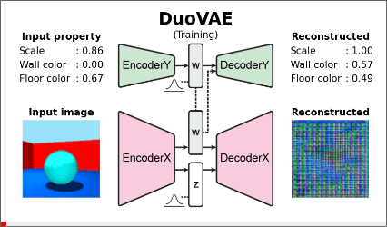
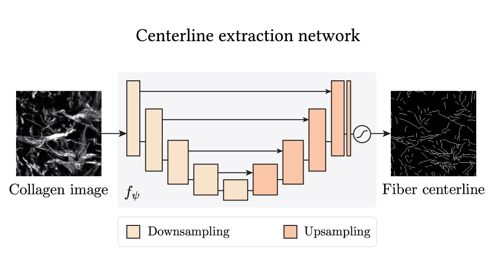
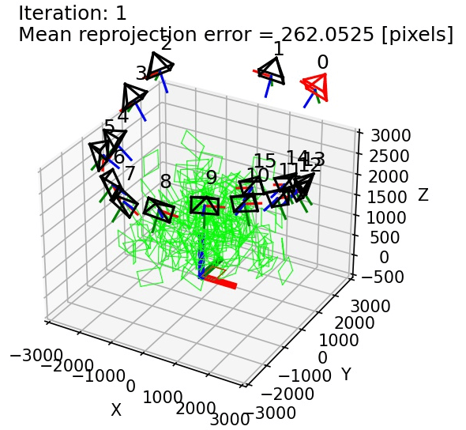

|
3D Simulation Super-Resolution
Official Pytorch implementation of the 3D Simulation Super-resolution framework. github |
|  |
DuoVAE
VAE framework for property-controlled data generation. github |
|  |
Collagen Fiber Centerline Extraction Network
Training of the collagen fiber centerline extract network (Stage I, II, and III). github |
|  |
Multi-Camera Calibration
Calibrates multiple cameras using a planar calibration checkerboard through five main steps:
|